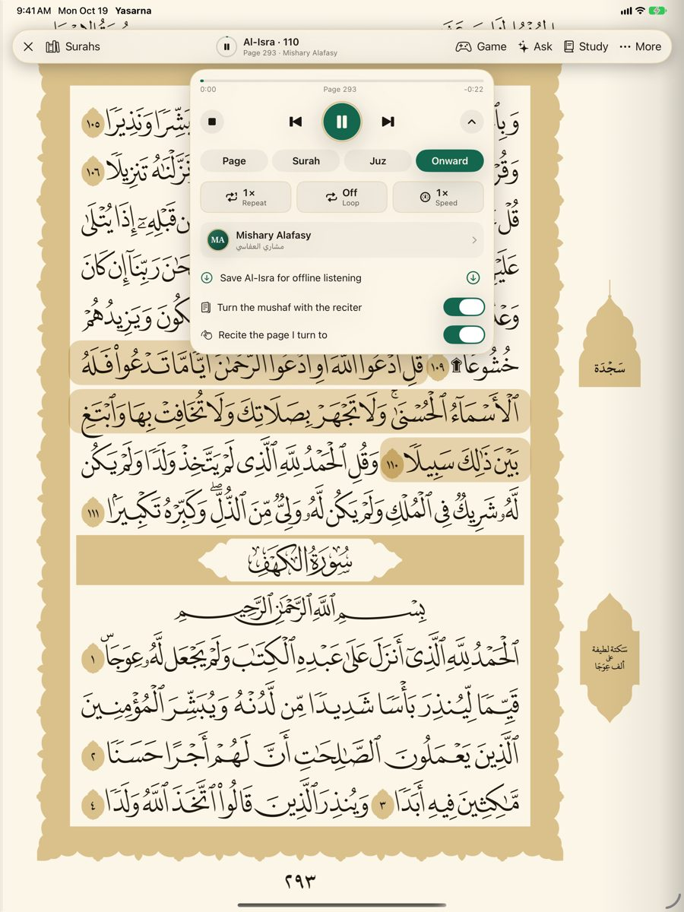
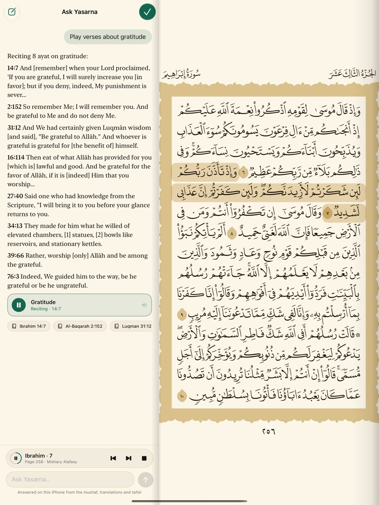
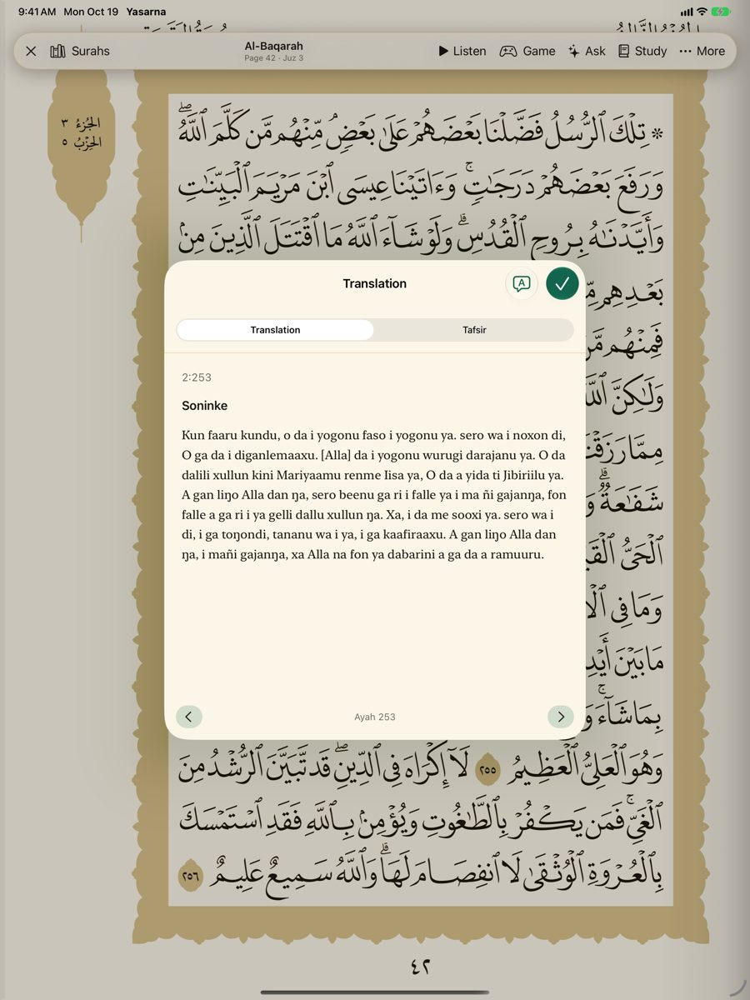
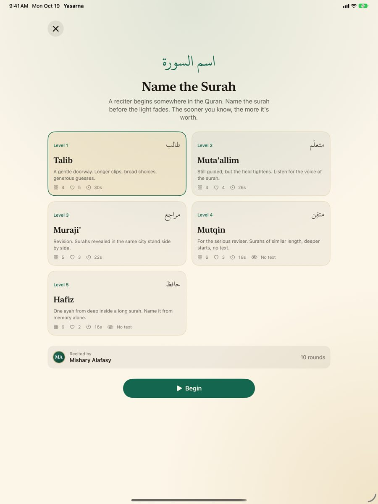

Read
- The complete King Fahd Complex mushaf, fifteen lines to a page, turned like paper
- On the unfolded iPhone Duo and iPad, two facing pages — or the Quran beside its translation or tafsir
- Ten reading themes, from classic paper to a calm night
- The whole Quran, translations and tafsir work offline
Listen
- 40 reciters, including Mishary Alafasy, Al-Husary, As-Sudais and Abdul Basit
- Tap any ayah to hear it; the reciter's ayah lights up and the pages turn with the recitation
- Recite a page, surah, juz or onward; repeat, loop and change speed
- Download surahs to listen anywhere
Understand
- Tafsir Ibn Kathir (abridged, English) for every ayah
- English and Spanish translations; Soninke for Surah Al-Baqarah, with more to come
- Ask Yasarna: “Play Ayatul Kursi”, “Ayat about patience”, “Explain 112:1” — answered on your device
Practise
- Name the Surah: a reciter begins somewhere in the Quran — name the surah before the light fades
- Five levels, from Talib to Hafiz
No account, no ads, no tracking. Yasarna Duo collects no data at all.